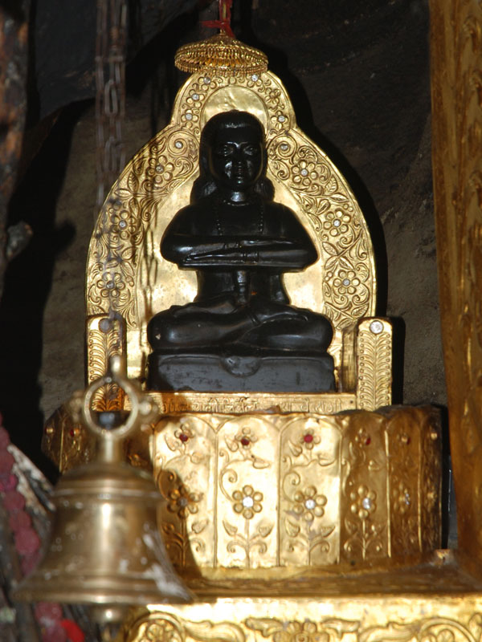

Hamirpur district is one of the twelve districts of the state of Himachal Pradesh, India. The headquarters of the district is in the Hamirpur town. The district occupies an area of 1,118 square kilometres or 432 square miles. It is the smallest district of Himachal Pradesh. It is also known as “Martyr's Land” (Veer Bhumi). It is the most educated district of Himachal and has the highest density of roads amongst all districts in India.Carved out from Kangra District in 1972, Hamirpur District is closely associated with the Katoch dynasty. It was the part of old Jalandhar-Trigarta empire. Panin referred to the people of this kingdom as great warriors and fighters. Even today Army is the largest employer for Hamirpuris, who form large bulks of Dogra Regiment, Jammu and Kashmir Riflespunjab regiment, the grenadiers, Rajput regiment regiment as well as Hodson's Horse and Scinde Horse. infact hamirpuris are also in large no of paramiltary forces. In addition to their repute for being brave and professional soldiers they are well known for the hardiness characteristic of hill people thus earning the name VeerBhumi for Hamirpur as rest of Himachal calls itself Dev Bhumi.
Sidh Baba Balak Nath (Sanskrit: सिद्ध बाबा बालक नाथ) also known as Paunahari or Dudhadhari is a Hindu deity known as the most gracious deity in Hinduism. He is known as the incarnation of Lord Shiva in Kali Yuga. The main temple of Sidh Baba Balak Nath is south of Hamirpur, Himachal Pradesh in Deotyotsidh Forest. The temple is situated on Dholgiri hill and is just 4 km from base city Shahtalai. His temple is very big and women are not allowed to enter the main garbhagriha which is the cave and Idol of Baba Balak nath jee has been placed and believe that Baba Balak nath did his spiritual practice for many year in the cave Many people with their desires come to this temple. Baba Balak Nath is the son of lord Shiva.
The most popular story about the birth of Baba Balak Nath as 'sidh-purush' is associated with the Amar Katha of Lord Shiva. It is said that Lord Shiva was sharing the Amar Katha with Goddess Parvati in the cave of Amarnath, and Goddess Parvati fell asleep. A kid-parrot was there in the cave and he was listening the entire story and was making noise of 'yes' ("hmm.."). When the story finished, Lord Shiva found Goddess Parwati sleeping and so he understood that someone else had heard the story. He became very angry and threw his Trishul on the kid-parrot. The kid-parrot escaped from there to save his life and Trishul followed him. In the way, the wife of Rishi Vyasa was yawning. The kid-parrot entered her stomach through her mouth. The Trishul stopped, as it was unreligious to kill a lady. When Lord Shiva knew all this he also came there and narrated his problem to Rishi Vyas. Rishi Vyas told him that he should wait there and as the kid-parrot would come out, he could kill him. continue reading